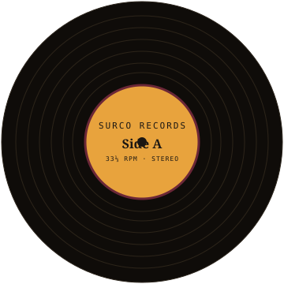

Surco es una guía práctica para quienes empiezan a coleccionar vinilos: cómo elegir el primer tocadiscos, dónde buscar ediciones y cómo cuidar cada pieza para que dure décadas.

Pasá el cursor sobre el disco
La reproducción analógica conserva matices que la compresión digital suele recortar.
Las tapas grandes, los encartes y las ediciones limitadas son parte de la experiencia.
Poner una cara entera invita a escuchar un disco de principio a fin, sin saltar temas.